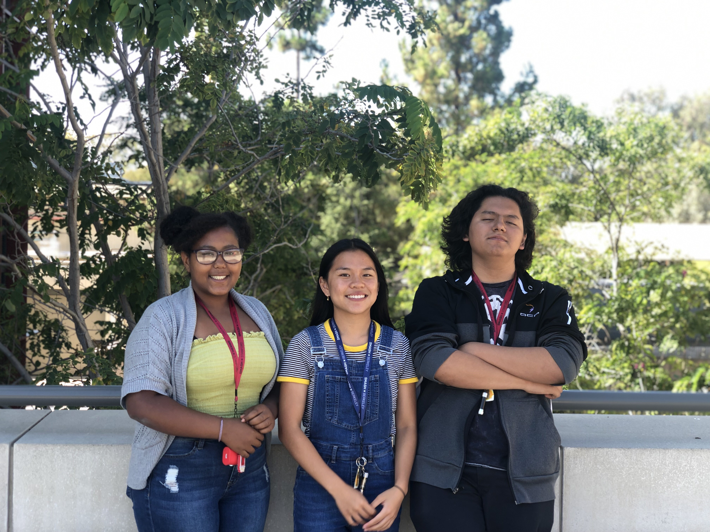

Our team include Eden Ephrem, Christian Lopez, and Cindy Kwok
Hello, I am a SMASH Scholar at the Stanford Site and here is some information about me. I like chocolate, water, and sleeping on my bed. I also know a few things about this and that meaning my knowledge can be random at times. As a person, I am an aloof guy in a way and can talk to someone as some sort of therapist or just a talking buddy. Some careers I am interested in are Robotic Engineer, Bio-Engineer, or Astrology/Astrophysicist.
Hey everyone, my name is Cindy Kwok and I am a SMASH scholar at Stanford. My hobby includes playing with my dog. I am very passionate about dogs. Therefore, when choosing a disease, our group chose rabies. Rabies are the most common in dogs due to the fact that many dogs in low-income countries are not properly vaccinated. Which leads to many cases and high rates of death due to rabies. The focus of this project is to help low-income communities decrease their death rates with rabies.
